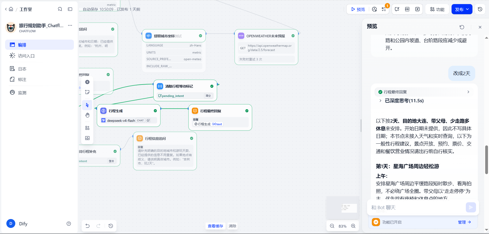

三城知识问答
沈阳、大连、天津，每城三份景点、美食、交通与住宿资料。检索后依据上下文回答，未收录事实说明缺失。
RAG · 资料依据从单 Agent 到 Chatflow
一个基于 Dify 的旅行助手项目。用明确的工作流连接知识检索、天气接口与会话状态，让每一次回答的依据和边界都看得见。
项目展示页 · 学习与实践记录 · 更新于 2026.10.31
3 天，带父母出游
“大连”
“改成 2 天”
公开模板节点
旅游知识资料
已定义的评测用例
通过的节点离线测试
按 14 步计划完成第 1–11 步的主要功能搭建。完整评测尚未执行，本项目不提供通过率。公开模板更新与在线 Dify 发布分别管理。
01 / CAPABILITIES
从依靠提示词约束单个 Agent，迭代为分类器驱动的 Chatflow。将参数、检索、工具与生成拆开，更容易看到具体发生了什么。
沈阳、大连、天津，每城三份景点、美食、交通与住宿资料。检索后依据上下文回答，未收录事实说明缺失。
RAG · 资料依据通过当前天气取得动态坐标，再调用 OpenWeather 预报接口，并传入查询城市的当前当地日期。
HTTP · 外部数据保存城市、天数、偏好、出发日期与等待状态，支持先提需求、再补条件，以及后续修改天数。
Python · 会话变量分类器区分天气、知识、行程与无关请求。无关请求进入固定回复，分类效果仍需完整评测。
意图识别 · 条件分支02 / UNDER THE HOOD
选择一个任务，查看实际编排方式、关键参数和当前限制。这里展示的是工作流机制，不会发送在线请求。
输入示例
输入示例
输入示例
输入示例
当前公开模板：23 个节点 · Python 节点借助 AI 编写 · 查看完整 YAML ↗
03 / KNOWLEDGE BASE
资料保留来源与适用范围，覆盖稳定事实与一般出行建议。实时票价、预约余量和酒店库存不在知识库范围内。
04 / EVIDENCE
已有材料分为召回观察、节点离线测试与局部在线交互。它们回答不同问题，不能合并成一个应用通过率。
同源九份文档，每组 15 题，共 45 次观察。下表只统计其中 10 道有答案题的答案片段命中。
| 配置 | 分块 / 重叠 | 检索与 Top K | 命中 |
|---|---|---|---|
| A | 500 / 50 | 向量 · K3 | 6 / 10 |
| B | 1000 / 100 | 向量 · K3 | 6 / 10 |
| C | 1000 / 100 | 混合 + 重排 · K5 | 8 / 10 |
C 同时改变检索、重排与 K。新增答案位于第 4、5 位，不能将差异单独归因于重排。当前 Chatflow 为加权 K4、关闭模型重排，不能套用 C 的结果。
阅读完整评测说明 ↗覆盖补城市、补天数、追加偏好返回、更新天数与日期、非法天数保留旧值，以及坐标与当地日期格式。
42 条基础用例 + 15 条 RAG 用例，包含多轮追问、超范围和资料缺失等情况。完整线上评测暂停，尚未形成应用通过率。
查看用例与判定标准 ↗
05 / KNOWN BOUNDARIES
功能搭建、公开模板、本地验证与在线部署是不同状态。下面这些问题仍然保留。
“明天天气怎么样 → 杭州”曾误入行程追问。行程等待状态已实现，天气分支还没有同等接续机制。D001 已标注已知限制。
当前行程生成基于已收集参数，未实际检索知识库或查询天气。D005、D006 天气项按当前范围注明不判定；这次范围说明不代表用例已通过。
目标日期仍由模型从预报中选择，存在选错日期或时段的风险。偏好以字符串追加，否定偏好、新任务重置和状态隔离未实现。
原57题尚未完整执行，部分库外城市推荐与严格知识规则的适用性尚未验证。公开模板修正已入库，在线 Dify 是否同步仍需单独核对。
06 / REPRODUCE
下载公开 Chatflow，在自己的 Dify 环境配置模型、天气凭证和知识库，再按指南核对节点与冒烟场景。
保留旧版本，先检查导出格式与模型兼容性。
配置模型与 OpenWeather，重新绑定三城知识库。
查看真实回答、分支和工具数据，记录成功与失败。